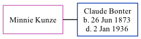

Minnie Kunze, the wife of Claude Swain Bonter (the third cousin three-times-removed on the mother's side of Nigel Horne), and married Claude in Allen, Indiana, USA on Oct 22, 1902.
Media
Huntington Weekly Herald - 24 Oct 1902
Family Tree

Generated by ged2site. Last updated on Nov 13, 2024